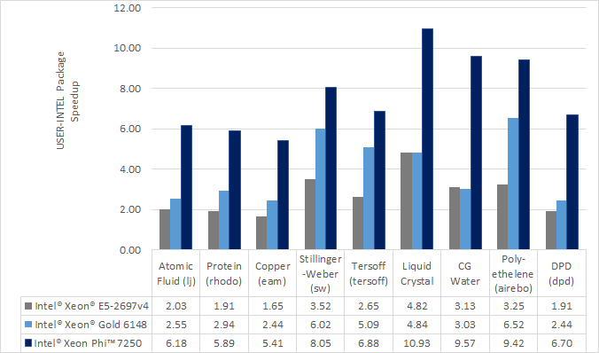

\(\renewcommand{\AA}{\text{Å}}\)
7.4.2. INTEL package
The INTEL package currently has no official maintainer. It accelerates simulations on Intel CPUs by running in single, mixed, or double precision with vectorization and multi-threading.
Currently Available INTEL Styles
Fixes: nve, npt, nvt, nvt/sllod, nve/asphere, electrode/conp, electrode/conq, electrode/thermo
Pair Styles: airebo, airebo/morse, buck/coul/cut, buck/coul/long,:doc:buck <pair_buck>, dpd, eam, eam/alloy, eam/fs, gayberne, lj/charmm/coul/charmm, lj/charmm/coul/long, lj/cut, lj/cut/coul/long, lj/long/coul/long, rebo, snap, sw, tersoff
K-Space Styles: pppm, pppm/disppppm/electrode
Warning
None of the styles in the INTEL package currently support computing per-atom stress. If any compute or fix in your input requires it, LAMMPS will abort with an error message.
Speed-up to expect
The speedup will depend on your simulation, the hardware, which
styles are used, the number of atoms, and the floating-point
precision mode. Performance improvements are shown compared to
LAMMPS without using other acceleration packages as these are
under active development (and subject to performance changes). The
measurements were performed using the input files available in
the src/INTEL/TEST directory with the provided run script.
These are scalable in size; the results given are with 512K
particles (524K for Liquid Crystal). Most of the simulations are
standard LAMMPS benchmarks (indicated by the filename extension in
parenthesis) with modifications to the run length and to add a
warm-up run.

Results are speedups obtained on Intel Xeon E5-2697v4 processors
(code-named Broadwell) and Intel Xeon Gold 6148 processors (code-named
Skylake) with “June 2017” LAMMPS built with Intel Parallel Studio
2017 update 2. Results are with 1 MPI task per physical core. See
src/INTEL/TEST/README for the raw simulation rates and
instructions to reproduce.
Accuracy and order of operations
In most molecular dynamics software, parallelization parameters (# of MPI, OpenMP, and vectorization) can change the results due to changing the order of operations with finite-precision calculations. The INTEL package is deterministic. This means that the results should be reproducible from run to run with the same parallel configurations and when using deterministic libraries or library settings (MPI, OpenMP, FFT). However, there are differences in the INTEL package that can change the order of operations compared to LAMMPS without acceleration:
Neighbor lists can be created in a different order
Bins used for sorting atoms can be oriented differently
The default stencil order for PPPM is 7. By default, LAMMPS will calculate other PPPM parameters to fit the desired accuracy with this order
The newton setting applies to all atoms, not just atoms shared between MPI tasks
Vectorization can change the order for adding pairwise forces
When using the
-DLMP_USE_MKL_RNGdefine (all included intel optimized makefiles do) at build time, the random number generator for dissipative particle dynamics (pair style dpd/intel) uses the Mersenne Twister generator included in the Intel MKL library (that should be more robust than the default Masaglia random number generator)
The precision mode (described below) used with the INTEL package can change the accuracy of the calculations. For the default mixed precision option, calculations between pairs or triplets of atoms are performed in single precision, intended to be within the inherent error of MD simulations. All accumulation is performed in double precision to prevent the error from growing with the number of atoms in the simulation. Single precision mode should not be used without appropriate validation.
Quick Start for Experienced Users
LAMMPS should be built with the INTEL package installed. Simulations should be run with 1 MPI task per physical core, not hardware thread.
Edit
src/MAKE/OPTIONS/Makefile.intel_cpu_intelmpias necessary.Set the environment variable
KMP_BLOCKTIME=0-pk intel 0 omp $t -sf inteladded to LAMMPS command-line$tshould be 2 for Intel Xeon CPUsFor some of the simple 2-body potentials without long-range electrostatics, performance and scalability can be better with the
newton offsetting added to the input scriptFor simulations on higher node counts, add
processors * * * grid numato the beginning of the input script for better scalabilityIf using
kspace_style pppmin the input script, addkspace_modify diff adfor better performance
For simulations using kspace_style pppm on Intel CPUs supporting
AVX-512:
Add
kspace_modify diff adto the input scriptThe command-line option should be changed to
-pk intel 0 omp $r lrt yes -sf intelwhere$ris the number of threads minus 1.Do not use thread affinity (set
KMP_AFFINITY=none)The
newton offsetting may provide better scalability
Required hardware/software
When using Intel compilers version 16.0 or later is required.
Although any compiler can be used with the INTEL package, currently, vectorization directives are disabled by default when not using Intel compilers due to lack of standard support and observations of decreased performance. The OpenMP standard now supports directives for vectorization and we plan to transition the code to this standard once it is available in most compilers. We expect this to allow improved performance and support with other compilers.
Notes about Simultaneous Multithreading
Modern CPUs often support Simultaneous Multithreading (SMT). On Intel processors, this is called Hyper-Threading (HT) technology. SMT is hardware support for running multiple threads efficiently on a single core. Hardware threads or logical cores are often used to refer to the number of threads that are supported in hardware. For example, the Intel Xeon E5-2697v4 processor is described as having 36 cores and 72 threads. This means that 36 MPI processes or OpenMP threads can run simultaneously on separate cores, but that up to 72 MPI processes or OpenMP threads can be running on the CPU without costly operating system context switches.
Molecular dynamics simulations will often run faster when making use of SMT. If a thread becomes stalled, for example because it is waiting on data that has not yet arrived from memory, another thread can start running so that the CPU pipeline is still being used efficiently. Although benefits can be seen by launching a MPI task for every hardware thread, for multinode simulations, we recommend that OpenMP threads are used for SMT instead, either with the INTEL package, OPENMP package, or KOKKOS package. In the example above, up to 36X speedups can be observed by using all 36 physical cores with LAMMPS. By using all 72 hardware threads, an additional 10-30% performance gain can be achieved.
The BIOS on many platforms allows SMT to be disabled, however, we do not recommend this on modern processors as there is little to no benefit for any software package in most cases. The operating system will report every hardware thread as a separate core allowing one to determine the number of hardware threads available. On Linux systems, this information can normally be obtained with:
cat /proc/cpuinfo
Building LAMMPS with the INTEL package
See the Build extras page for instructions. Some additional details are covered here.
For building with make, several example Makefiles for building with
the Intel compiler are included with LAMMPS in the src/MAKE/OPTIONS/
directory:
Makefile.intel_cpu_intelmpi # Intel Compiler, Intel MPI
Makefile.intel_cpu_mpich # Intel Compiler, MPICH
Makefile.intel_cpu_openmpi # Intel Compiler, OpenMPI
For users with recent installations of Intel Parallel Studio, the process can be as simple as:
make yes-intel
source /opt/intel/parallel_studio_xe_2016.3.067/psxevars.sh
# or psxevars.csh for C-shell
make intel_cpu_intelmpi
The general requirements for Makefiles with the INTEL package
are as follows. When using Intel compilers, -restrict is required
and -qopenmp is highly recommended for CCFLAGS and LINKFLAGS.
CCFLAGS should include -DLMP_INTEL_USELRT (unless POSIX Threads
are not supported in the build environment) and -DLMP_USE_MKL_RNG
(unless Intel Math Kernel Library (MKL) is not available in the build
environment). For Intel compilers, LIB should include -ltbbmalloc
or if the library is not available, -DLMP_INTEL_NO_TBB can be added
to CCFLAGS. Other
recommended CCFLAG options for best performance are -O2 -fno-alias
-ansi-alias -qoverride-limits fp-model fast=2 -no-prec-div.
Note
See the src/INTEL/README file for additional flags that
might be needed for best performance on Intel server processors
code-named “Skylake”.
Note
The vectorization and math capabilities can differ depending on
the CPU. For Intel compilers, the -x flag specifies the type of
processor for which to optimize. -xHost specifies that the compiler
should build for the processor used for compiling. For fourth
generation Intel Xeon (v4/Broadwell) processors, -xCORE-AVX2 should
be used. For older Intel Xeon processors, -xAVX will perform best
in general for the different simulations in LAMMPS. The default
in most of the example Makefiles is to use -xHost, however this
should not be used when cross-compiling.
Running LAMMPS with the INTEL package
Running LAMMPS with the INTEL package is similar to normal use with the exceptions that one should 1) specify that LAMMPS should use the INTEL package, 2) specify the number of OpenMP threads, and 3) optionally specify the specific LAMMPS styles that should use the INTEL package. 1) and 2) can be performed from the command-line or by editing the input script. 3) requires editing the input script. Advanced performance tuning options are also described below to get the best performance.
When running on a single node, best performance is normally obtained by using 1 MPI task per physical core and additional OpenMP threads with SMT. For Intel Xeon processors, 2 OpenMP threads should be used for SMT. In cases where the user specifies that LRT mode is used (described below), 1 or 3 OpenMP threads should be used. For multi-node runs, using 1 MPI task per physical core will often perform best, however, depending on the machine and scale, users might get better performance by decreasing the number of MPI tasks and using more OpenMP threads. For performance, the product of the number of MPI tasks and OpenMP threads should not exceed the number of available hardware threads in almost all cases.
Run with the INTEL package from the command-line
To enable INTEL optimizations for all available styles used in the input
script, the -sf intel command-line switch can
be used without any requirement for editing the input script. This
switch will automatically append “intel” to styles that support it. It
also invokes a default command: package intel 1. This
package command is used to set options for the INTEL package. The
default package command will specify that INTEL calculations are
performed in mixed precision and that the number of OpenMP threads is
specified by the OMP_NUM_THREADS environment variable.
You can specify different options for the INTEL package by using
the -pk intel command-line switch with
keyword/value pairs as specified in the documentation. Common options
to the INTEL package include omp to
override any OMP_NUM_THREADS setting and specify the number of OpenMP
threads, mode to set the floating-point precision mode, and lrt to
enable Long-Range Thread mode as described below. See the package intel command for details, including the default values
used for all its options if not specified, and how to set the number
of OpenMP threads via the OMP_NUM_THREADS environment variable if
desired.
Examples (see documentation for your MPI/Machine for differences in launching MPI applications):
# 2 nodes, 36 MPI tasks/node, $OMP_NUM_THREADS OpenMP Threads
mpirun -np 72 -ppn 36 lmp_machine -sf intel -in in.script
# use 2 OpenMP threads for each task, use double precision
mpirun -np 72 -ppn 36 lmp_machine -sf intel -in in.script \
-pk intel 0 omp 2 mode double
Or run with the INTEL package by editing an input script
As an alternative to adding command-line arguments, the input script can be edited to enable the INTEL package. This requires adding the package intel command to the top of the input script. For the second example above, this would be:
package intel 0 omp 2 mode double
To enable the INTEL package only for individual styles, you can add an “intel” suffix to the individual style, e.g.:
pair_style lj/cut/intel 2.5
Alternatively, the suffix intel command can be added to the input script to enable INTEL styles for the commands that follow in the input script.
Tuning for Performance
Note
The INTEL package will perform better with modifications to the input script when PPPM is used: kspace_modify diff ad should be added to the input script.
Long-Range Thread (LRT) mode is an option to the package intel command that can improve performance when using
PPPM for long-range electrostatics on processors
with SMT. It generates an extra pthread for each MPI task. The thread
is dedicated to performing some of the PPPM calculations and MPI
communications. This feature requires setting the pre-processor flag
-DLMP_INTEL_USELRT in the makefile when compiling LAMMPS. It is unset
in the default makefiles (Makefile.mpi and Makefile.serial) but
it is set in all makefiles tuned for the INTEL package. On Intel
Xeon processors, using
this mode might result in better performance when using multiple nodes,
depending on the specific machine configuration. To enable LRT mode,
specify that the number of OpenMP threads is one less than would
normally be used for the run and add the lrt yes option to the -pk
command-line suffix or “package intel” command. For example, if a run
would normally perform best with “-pk intel 0 omp 4”, instead use
-pk intel 0 omp 3 lrt yes. When using LRT, you should set the
environment variable KMP_AFFINITY=none.
Note
Changing the newton setting to off can improve performance and/or scalability for simple 2-body potentials such as lj/cut or when using LRT mode on processors supporting AVX-512.
Not all styles are supported in the INTEL package. You can mix
the INTEL package with styles from the OPT
package or the OPENMP package. Of course, this
requires that these packages were installed at build time. This can
performed automatically by using -sf hybrid intel opt or -sf hybrid
intel omp command-line options. Alternatively, the “opt” and “omp”
suffixes can be appended manually in the input script. For the latter,
the package omp command must be in the input script or
the -pk omp Nt command-line switch must be used
where Nt is the number of OpenMP threads. The number of OpenMP threads
should not be set differently for the different packages. Note that
the suffix hybrid intel omp command can also be used
within the input script to automatically append the “omp” suffix to
styles when INTEL styles are not available.
Note
For simulations on higher node counts, add processors * * * grid numa to the beginning of the input script for better scalability.
When running on many nodes, performance might be better when using fewer OpenMP threads and more MPI tasks. This will depend on the simulation and the machine. Using the verlet/split run style might also give better performance for simulations with PPPM electrostatics. Note that this is an alternative to LRT mode and the two cannot be used together.
Restrictions
None of the pair styles in the INTEL package currently support the “inner”, “middle”, “outer” options for rRESPA integration via the run_style respa command; only the “pair” option is supported.
References
Brown, W.M., Carrillo, J.-M.Y., Mishra, B., Gavhane, N., Thakkar, F.M., De Kraker, A.R., Yamada, M., Ang, J.A., Plimpton, S.J., “Optimizing Classical Molecular Dynamics in LAMMPS”, in Intel Xeon Phi Processor High Performance Programming: Knights Landing Edition, J. Jeffers, J. Reinders, A. Sodani, Eds. Morgan Kaufmann.
Brown, W. M., Semin, A., Hebenstreit, M., Khvostov, S., Raman, K., Plimpton, S.J. Increasing Molecular Dynamics Simulation Rates with an 8-Fold Increase in Electrical Power Efficiency. 2016 High Performance Computing, Networking, Storage and Analysis, SC16: International Conference (pp. 82-95).
Brown, W.M., Carrillo, J.-M.Y., Gavhane, N., Thakkar, F.M., Plimpton, S.J. Optimizing Legacy Molecular Dynamics Software with Directive-Based Offload. Computer Physics Communications. 2015. 195: p. 95-101.